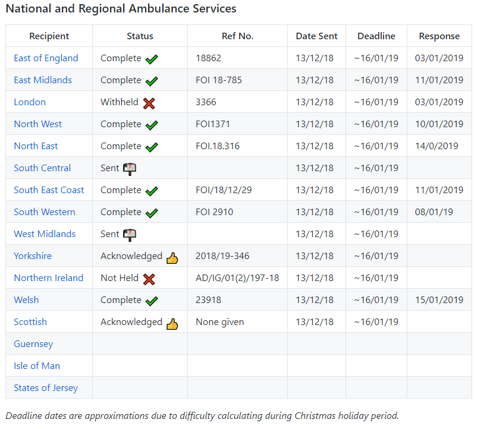

In late 2018 I started sending Freedom of Information Requests (FOI) to various UK Government Departments, Agencies and Non-Governmental Bodies asking them to disclose their yearly spending data on cyber security.
My assertion is cyber security spending is an indication of the overall security of an organiation and how seriously they take security.
Initially I started with services which can be considered of naitonal importance, and the lack of security could be considered a risk to national security. This post will briefly dicuss the responses of UK national ambulance services from Northern Ireland, Scotland, Wales and England.
The FOI Request
Each Department, Agency or Non-Governmental Body was asked to provide the same information:
- Provide the total amount of money spent on Cyber Security for financial years 2015-18.
- The term “Cyber Security” is defined as: “… consider the term to encompass activities relating to information security, computer security and computer network security. Including staff training, consultant services, software and hardware.”
- Additionaly, “Details on what training and consultant services were for …”
At the time of the request (December 2018) 1. would provide approximately three years of data.
All of the information I collect and the exact request wording is available on GitHub.
Status of Resquests

The Results So Far
I haven’t finished recieving the data from some of the ambulance services, notably the West Midlands and South Central - they’re overdue. I’ll be following up soon. Additionally, due to the structure of some of the services, namely the three remote island services; Guernsey, Isle of Man and States of Jersey, I have found it difficult to contact the appropraite people. Eventually this will be complete.
It must be pointed out I am not a statistician, and as different entities do not record or store financial data in the same way this make analysis difficult.
OK! On to some results.
It is clear there is a large disparity between the spending of some abulance services compared to others. Excluding outliers, and focusing on a particular category, Network Security for example, and the financial year 2016/7, East Midlands spent £1,275, North East Ambulance spent £4,175 and the Welsh service spent £46,947.
East Midlands Ambulance Service spends significantly different amounts per year, although the default appears to be very low - they did not specificy details so it is difficult to analyse. In 2015 and 2018 they spend over £100,000, while 2016 and 2017 they spent a mere £1,275 each year.
The North East Ambulance Service is consistent in its spending on Network Security over the year period that they provided data. In 2015 and 2016 they spent £4,175 and £4,000 in 2018. While in 2017 they spent £57,375, the increase was indicated as capital expenditure on improvements in perimeter security.
The Welsh Ambulance Service is somewhat similar to East Midlands, although there is perhaps a trend towards higher spend after WannaCry(?). They spent £5,337 in 2015/6, and £46,793 and £54,727 in 2016/7 and 2017/8 respectively.
It is difficult to analyse due to the lack of insight into how they are actually spending the money. However, it isn’t possible to obtain this data due to the security risk of providing detailed explanations of such spending. I purposefully suggested recipients do not include specifics for this reason.
It’s going to be an interesting project once it is complete. I also intend to collect data from the other services; police and fire. As well as Government Departments.
Keep an eye on the GitHub for regular updates, or check back here in a month or two.